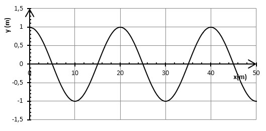

1ère Générale
Spécialité Physique – Chimie
2019-2020
Semaine 7 - Lundi 18 mai
Niveau 1G/Spécialité physique chimie - Durée recommandée 45 min
Travail à rendre (vous pouvez photographier votre cahier) à l'adresse :
m.popoff@lyceetaiarapu.com.
Enregistrez votre fichier (DOC, JPG, etc.) sous la forme
classe-nom-prenom
Revoir le chapitre 3 « Ondes mécaniques ».
Exercice 1. (15 min)
La propagation de la houle est représentée par le graphique ci-dessous.
-
Déterminer les caractéristiques de cette onde.
Aide :- Déterminer le type de représentation de l’onde
- Déterminer les grandeurs caractéristiques.
- En déduire la célérité sachant que la période \(T=10\ s\).
Exercice 2. (30 min)
À bord d’un navire, une équipe scientifique enregistre le son produit par une détonation en pleine mer. L’un des capteurs est situé dans l’eau (récepteur eau \(R_{eau}\)), et l’autre dans l’air (récepteur air \(R_{air}\)). L’analyse des enregistrements montre que le son enregistré dans l’air est perçu avec un retard \(Δt=16,43\ s\) sur celui qui est détecté dans l’eau.
Données : célérité du son
- dans l'air : \(v_{air}=345\ m.s^{-1}\)
- dans l'eau : \(v_{eau}=1500\ m.s^{-1}\)
- Où a eu lieu l'explosion ?
Aide : Il s’agit d’une résolution de problème. Les étapes de la résolution :
- S’approprier la question posée
- Lire et comprendre les documents
- Dégager la problématique (on demande la distance d de l’explosion)
- Construire la réponse (exprimer la durée de la propagation dans l’air et dans l’eau, utiliser la notion de retard)
- Répondre